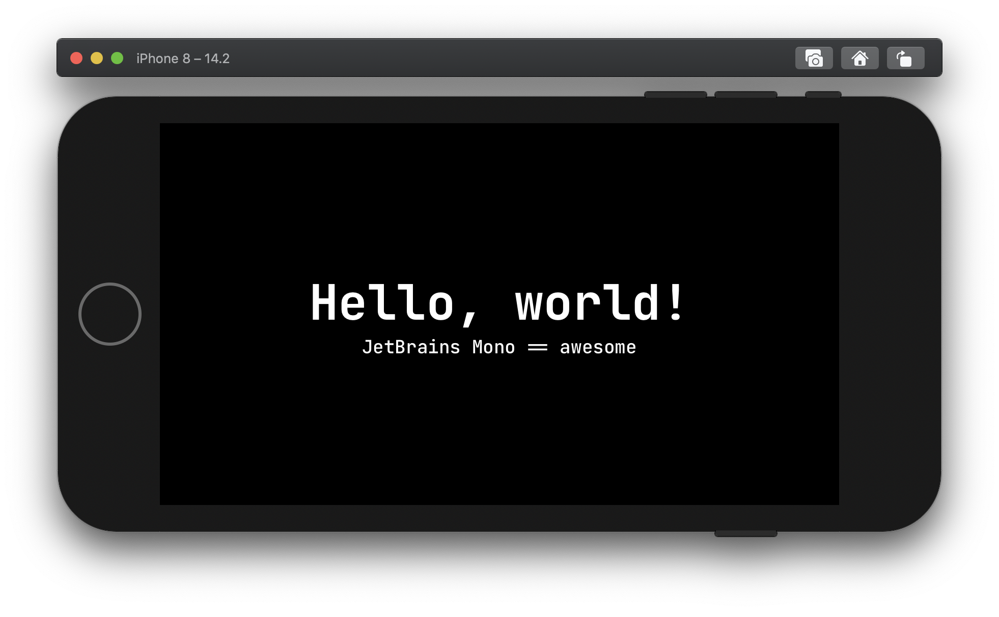

Scalable Custom Fonts in SwiftUI
Early on in my journey as an iOS engineer, requests from creatives were always points of tension for me. I thought I only had two options:
Please the designer, or, make a user experience that was resilient to screen size and personal settings (like accessible font sizes).
Turns out, like most times I think something is either Black or White, I was wrong.
Custom fonts were one of those taboo topics for me. I didn't know how to utilize them properly. I would add custom fonts to a project, and set very specific font sizes and weights to make the view pixel perfect... on one device. Later I learned about preferred font sizes and how they worked. It kinda rocked my world. Afterwards, I was able to please both our users and creatives with UIFont extensions in UIKit.
In this tutorial, we will recreate that functionality in SwiftUI.
Road Map
We're going to cover more than adding fonts to a SwiftUI application. The font's will be scalable with a user's preferred font size, and it will be a developer friendly implementation. To get there, we'll do things in steps:
- Add custom fonts to a project
- Create a simple way to reference the fonts
- Set default values for each
TextStyle - Make it Swifty!
Adding a Font
Importing Files into Xcode
This is a simple step. First find a font you'd like to, and have rights to, use. For this tutorial we'll be using JetBrains Mono. When you've downloaded the fonts, move them into your application's directory. Afterwards, open the project in Xcode, ensuring the Navigator Menu is open. Then add the files to your project by clicking the + button in the bottom left, selecting "Add Files to YOUR_PROJECT".
Provide the Fonts to the Application
Adding the fonts to the project is sadly not enough. To utilize the fonts, we need to tell the project what fonts to prepare for use. This is done inside of the application's .plist file. The key is "Fonts provided by application" and its value is the array of filenames you wish to import (excluding file type).
If you're following along to this tutorial using JetBrains Mono you can control + click on the .plist file, then select Open As -> Source Code.
After the file opens, you can paste the following code after <dict>:
<key>UIAppFonts</key>
<array>
<string>JetBrainsMono-Bold.ttf</string>
<string>JetBrainsMono-BoldItalic.ttf</string>
<string>JetBrainsMono-ExtraBold.ttf</string>
<string>JetBrainsMono-ExtraBoldItalic.ttf</string>
<string>JetBrainsMono-ExtraLight.ttf</string>
<string>JetBrainsMono-ExtraLightItalic.ttf</string>
<string>JetBrainsMono-Italic.ttf</string>
<string>JetBrainsMono-Light.ttf</string>
<string>JetBrainsMono-LightItalic.ttf</string>
<string>JetBrainsMono-Medium.ttf</string>
<string>JetBrainsMono-MediumItalic.ttf</string>
<string>JetBrainsMono-Regular.ttf</string>
<string>JetBrainsMono-Thin.ttf</string>
<string>JetBrainsMono-ThinItalic.ttf</string>
</array>
Enumerate Your Fonts For Easy Reference
Now that we've fully imported the fonts, we can use them like so:
Text("").font(.custom("JetBrainsMono-Regular", size: 18, relativeTo: .body))
Because the fonts are keyed by filename, using a font after it's imported is prone to human error. I like to enumerate sets of finite options as a type so that I can limit the scope of potential typos to one instance.
To do this, create an enum of type String that contains each font file name.
enum JetBrainsMono: String {
case regular = "JetBrainsMono-Regular"
case italic = "JetBrainsMono-Italic"
case medium = "JetBrainsMono-Medium"
case mediumItalic = "JetBrainsMono-MediumItalic"
case bold = "JetBrainsMono-Bold"
case boldItalic = "JetBrainsMono-BoldItalic"
case extraBold = "JetBrainsMono-ExtraBold"
case extraBoldItalic = "JetBrainsMono-ExtraBoldItalic"
case light = "JetBrainsMono-Light"
case lightItalic = "JetBrainsMono-LightItalic"
case extraLight = "JetBrainsMono-ExtraLight"
case extraLightItalic = "JetBrainsMono-ExtraLightItalic"
case thin = "JetBrainsMono-Thin"
case thinItalic = "JetBrainsMono-ThinItalic"
}
Ahhhh, Type Safety.
Now we can use the custom font's with the enumeration, like so:
Text("").font(.custom(JetBrainsMono.regular.rawValue, size: 18, relativeTo: .body))
Relative Font Sizes
The human brain is a fickle thing... We're likely to forget if .body should be size 18 or 24. Even if we do remember, we may mistype the value and get a wonky view. Since there is a finite set of TextStyles, I would again recommend abstracting this bit of detail.
I did this by extending SwiftUI's Font.TextStyle like so:
extension Font.TextStyle {
var size: CGFloat {
switch self {
case .largeTitle: return 60
case .title: return 48
case .title2: return 34
case .title3: return 24
case .headline, .body: return 18
case .subheadline, .callout: return 16
case .footnote: return 14
case .caption, .caption2: return 12
@unknown default:
return 8
}
}
}
Great! This helps prevent our faulty memories from ruining our UI/UX! It can be used like so:
Text("")
.font(
.custom(
JetBrainsMono.regular.rawValue,
size: Font.TextStyle.body.size,
relativeTo: .body
)
)
A Word on Behalf of Designers Everywhere
Apple has put a lot of thought into their font's sizing and how they scale. But each typeface is unique, and a size 16 SF font will be different than size 16 SomeCustomFont. For those reasons, we use the .custom() function above to relate a base size to how the font should scale with accessibility settings.
I would recommend you sit down with your designer and go over each of Apple's TextStyles with them. Hopefully they're opinionated and will help you nail down what size each of them should be for your custom font.
Let's Make it Swifty!
Text("")
.font(
.custom(
JetBrainsMono.regular.rawValue,
size: Font.TextStyle.body.size,
relativeTo: .body
)
)
That is a long line of code to set a font... That can be fixed.
First, let's create a helper function to get a custom font using our enum.
extension Font {
static func custom(_ font: JetBrainsMono, relativeTo style: Font.TextStyle) -> Font {
custom(font.rawValue, size: style.size, relativeTo: style)
}
}
Which we can use like this:
Text("").font(.custom(.regular, relativeTo: .body))
Now we're getting somewhere. However, that implementation still leaves too much room for human error. We can do better.
Next we're going to create some static variables that will contain all of the detail that we don't care to remember. It will go something like this:
extension Font {
static let jetBrainsMono = custom(.regular, relativeTo: .body)
static let jetBrainsMonoLargeTitle = custom(.bold, relativeTo: .largeTitle)
}
This will allow us to use our custom font like so:
Text("").font(.jetBrainsMono)
Now that is swifty!
🎉🍾🥳
Good work! You've learned how to add fonts to an XCode project, represent the fonts and their base sizes in enumerations, and replicate SwiftUI's preferredFont implementation!
In a newer article you'll learn how to package these fonts for reuse.